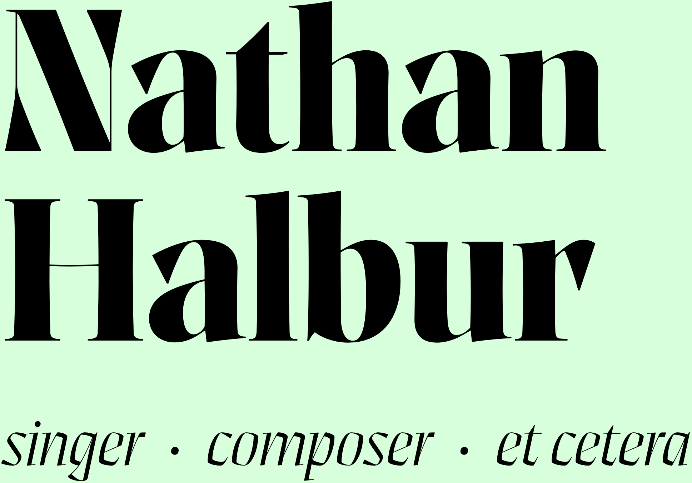

I am a baritone, multi-instrumentalist, composer, and graphic
design dabbler, residing in Boston since Fall 2019.
I am
a freelance musician, and therefore always eagerly pursuing a
menagerie of interesting projects; recent highlights include:
• the world première of …(Iphigenia), a new
opera by Wayne Shorter and Esperanza Spalding, which was
preceded by a preparatory 2-week residency at MASS MoCA;
•
singing in an octet of professional singers with the Boston Pops
in a series of Holiday Pops Kids’ Matinees;
• the world
première of Elena Ruehr’s Requiem with Emmanuel Music;
• a solo appearance in Bach cantatas BWV 130 & 149 with
Cantata Singers;
• a recording session on a new composition by Christopher
Hoh with Vox Futura;
• a solo appearance in the world première of
Eingang by John Haukoos, alongside 2 other new works on
the program
Whispers—what
haunts you? with Nightingale Vocal Ensemble;
• We Remember, a program of choral music
memorializing victims of the COVID-19 pandemic, with Ensemble
Altera;
• a long-term recording project of Heidi Breyer’s
new work Amor
Aeternus—Requiem for the Common Man;
• the world
première of my composition You have
taken many things by Nightingale Vocal Ensemble on the
program A New
Love Story:
Madrigals Reimagined.
I sing regularly with
Emmanuel Music, Ensemble Altera, Cantata Singers, Nightingale
Vocal Ensemble, Carduus, and the Metropolitan Chorale (as Artist
in Residence). I also frequently sing at churches, including
Church of the Advent, Church of the Redeemer, Trinity Church
Boston, Christ Church Cambridge, St. Cecilia Parish, St. Anthony
Shrine, and more.
My compositions and arrangements have been performed by
Nightingale Vocal Ensemble, Camerata California, the Davis
Chamber Choir, a cappella sextet GGN, and they have
been featured in the Sparks & Wiry Cries NYC
songSLAM.
I am half of experimental lo-fi pop
duo DREAMGLOW. In my leisure time, I enjoy roller skating
(sometimes to & from gigs!) and hiking.
Before moving to Boston in 2019, I lived in California,
where I grew up (in Fountain Valley, Orange County, in the
greater L.A. area), attended high school (Mater Dei High School
in Santa Ana) and university (UC Davis, studying Physics),
practiced drums & percussion (fairly seriously), and began
singing professionally (at Grace Cathedral in San Francisco;
with the Pacific Chorale in Costa Mesa; and with Camerata
California and Schola Cantorum in Sacramento).
Solo singing:
Original composition You have taken
many things (lyrics by Ayla Goktan, animation by Sukhi
Kanniks, performed by Nightingale Vocal Ensemble):
Original composition
Why,
what is Tybalt? (lyrics by Shakespeare, performed by
soprano Angela Yam for the 2021 Sparks & Wiry Cries NYC
songSLAM):
More compositions:
Arrangement of "Honeybee" (originally by
Steam Powered Giraffe, performed by the Davis Chamber Choir):
Arrangement of
"Santa Baby" (performed by GGN):
DREAMGLOW’s most
recent EP release mélo-fi:
Email:
Social Media: